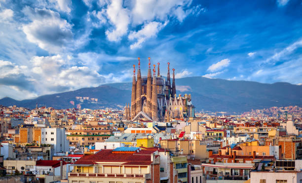
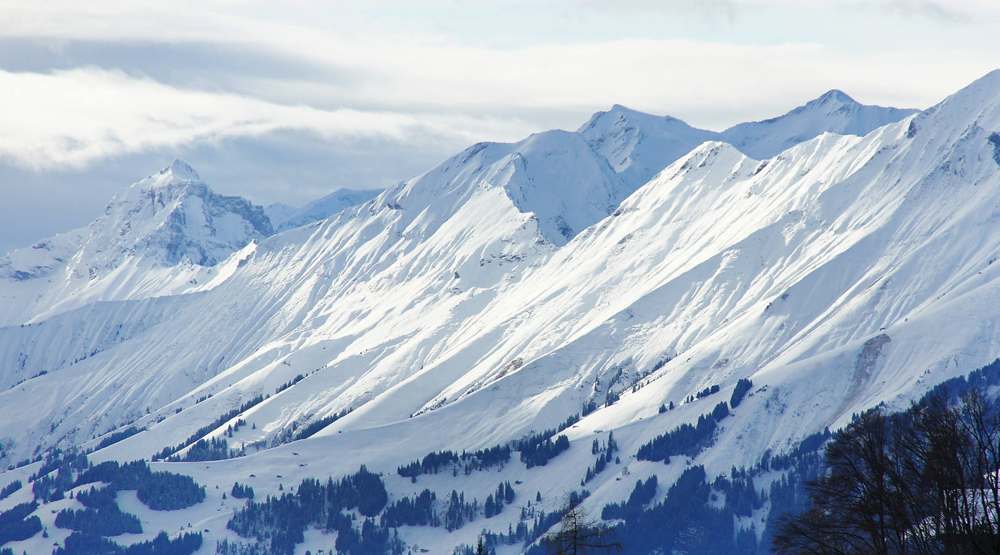

Paris, França
Iluminando o Romance: A Cidade do Amor

Santorini, Grécia
O Paraíso nas Ilhas Gregas

Barcelona, Espanha
Arte, Arquitetura e Cultura Catalã

Alpes Suíços
Além das Alturas: A Beleza Serena dos Alpes